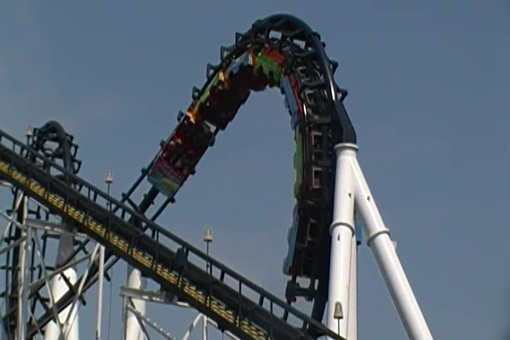
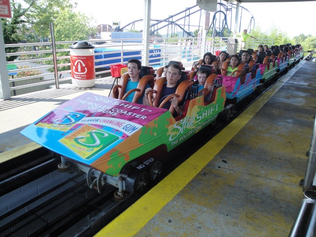
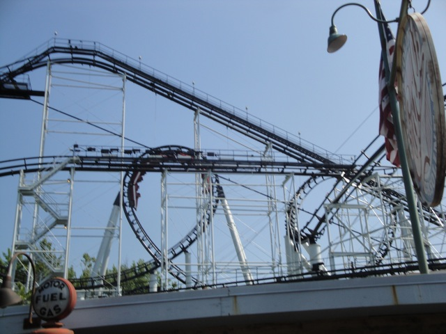
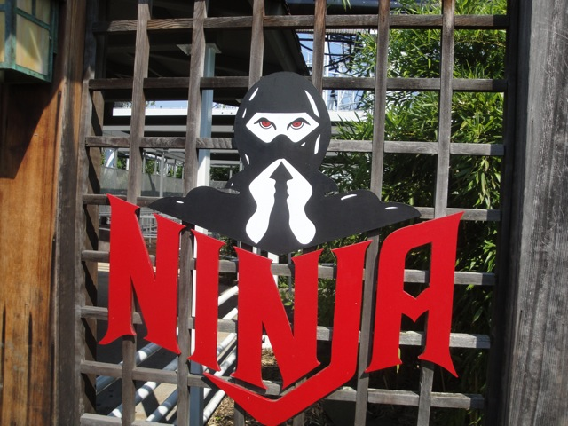

| |
Ninja Review

We're here at Six Flags St louis. Today's ride we'll be reviewing for you is Ninja. Now looking at this ride, it looks bad. The ride seems to have no fun elements and those don't look like pleasent transitions. However, this ride is not bad. No no no. It's REALLY F*CKING BAD!!!!!!!! I can not think of any positive qualities about this ride. It's slow, boring, and hurts like hell. So why waste any more time!!! Let's dive into the peice of sh*t known as Ninja. All right, we pull down the restraints and are off. We first dip out of the station and into a turn. While it doesn't exactly hurt in this spot, it does have some laterals and does give you the signal that this is going to suck. We then climb up the lifthill. It takes a while as its a very slow lifthill. But hey. That just leaves us with more time to avoid this awful awful ride. Well, we reach the top, and go through some straight track, just wishing we could get our beating over with. Well good news. Our wish has been granted and the beating has begun. It seems that the drop has really increased the amount of headbanging, though the speed goes unnoticed, for good reasons. We then go through a vertical loop. This is one of those mystery pain loops where it hurts, despite the fact that it's just a vertical loop. Oh, but don't worry. It may be SLC bad now, but in a few moments, it's going to get much much worse. We then into a sidewinder. Be afraid. Be very afraid. We shuffle and headbang through the first part like a verical loop. However, we then SMACK out of it hard as the second half is a corkscrew. The good news is that that smack was the worst part of the ride. The bad news is that the rest of the ride is still absolute painful sh*t. We then meander through a turn that has lots of headbanging. Ouch ouch ouch. We then go through some straight track and go through our mid course brakes. We then go down a small drop. It's not that fast but the following turn is quite painful. And then we've got our corkscrews. Good god. These suck so hard. We really wish we were on Evil Kineval or Mr. Freeze right now. Hell, even the Boss sounds nice when compared to this death trap. We then go through another painful turn before heading up a painful helix. All this time, our heads are getting quite a lot of headbanging. You think it's now over, but not before one final turn gives a nice old SMACK!!!!! Now it's over, and man did it suck. The ride not only hurts like motherf*cking hell, but even if it didn't, it'd still suck. It's slow, boring, badly paced, and of course painful. There's a reason why this ride made it on our Top 10 Worst Coasters List. So if you ride this to boost your credit count, consider yourself hopeless and desperate. I pity you and hope you can some day be nor...Ok, not normal. None of us are normal, but certainly not stooping so low as to riding horrible peices of sh*t like this for a credit.
1/10
Location: Six Flags St. Louis
Opened at Expo 86 in 1986
Moved to Six Flags St. Louis in 1989
Built by: Arrow/Vekoma
Last Ridden: August 10, 2010
Ninja Photos



|